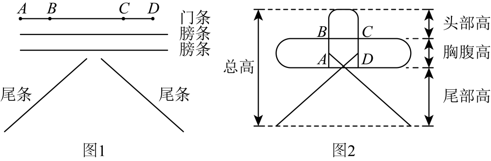

2025年北京市中考数学真题 · 数学解答题 第22题22. 北京风筝制作技艺是国家级非物质文化遗产．为制作一只京燕风筝，小明准备了五根直竹条（如图1）：一根门条、两根等长的膀条和两根等长的尾条．他将门条和膀条分别烤弯后与尾条一起扎成风筝的骨架（如图2），其头部高、胸腹高与尾部高的比是．已知单根膀条长是胸腹高的5倍，门条比单根膀条短10cm，图1中的长是门条长的，的长均等于胸腹高．求这只风筝的骨架的总高．
 ．已知单根膀条长是胸腹高的5倍，门条比单根膀条短10cm，图1中
．已知单根膀条长是胸腹高的5倍，门条比单根膀条短10cm，图1中 的长是门条长的
的长是门条长的 ，
， 的长均等于胸腹高．求这只风筝的骨架的总高．
的长均等于胸腹高．求这只风筝的骨架的总高．